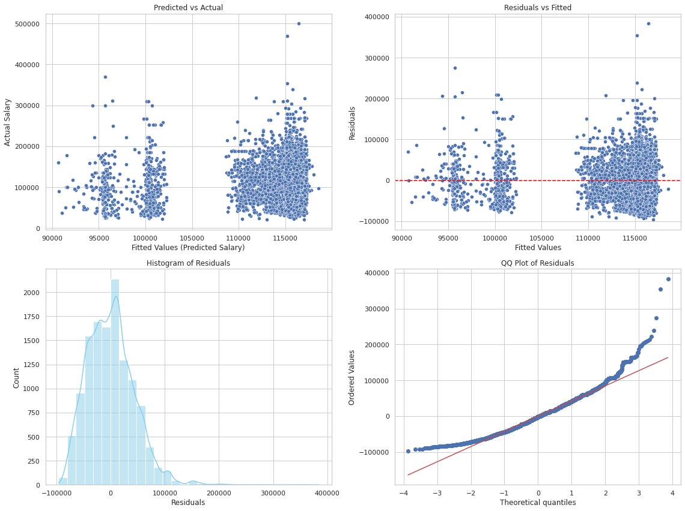
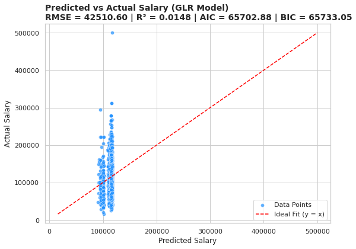

Engineer features from structured columns for salary prediction.
Train Linear Regression model.
Evaluate models using RMSE and R².
Visualize predictions using diagnostic plots.
Push work to GitHub and submit the repository link.
Setup
The instruction below provides you with general keywords for columns used in the lightcast file. See the data schema generated after the load dataset code above to use proper column name. For visualizations, tables, or summaries, please customize colors, fonts, and styles as appropriate to avoid a 2.5-point deduction. Also, provide a two-sentence explanation describing key insights drawn from each section’s code and outputs.
Follow the steps below as necessary, use your best judgement in importing/installing/creating/saving files as needed.
Create a new Jupyter Notebook in your ad688-sp25-lab08 directory named lab08_yourname.ipynb, if the file exists make sure to change the name.
Use your EC2 instance for this lab.
Ensure the lightcast_data.csv file is available on the EC2 instance. if not then Download the dataset
Add the dataset to .gitignore to avoid pushing large files to GitHub. Open your .gitignore file and add:
Make sure to create a virtual environment and install the required Python libraries if needed, don’t forget to activate it:
Install the required Python libraries if needed, you can also use the given requirement file to install the packages to the virtual environment:
Use Pyspark to the lightcast_data.csv file into a DataFrame:
You can reuse the previous code.
Copying code from your friend constitutes plagiarism. DO NOT DO THIS.
from pyspark.sql import SparkSessionimport plotly.io as piopio.renderers.default ="notebook"# Initialize Spark Sessionspark = SparkSession.builder.appName("LightcastData").getOrCreate()# Load Datadf = spark.read.option("header", "true").option("inferSchema", "true").option("multiLine","true").option("escape", "\"").csv("./data/lightcast_job_postings.csv")# Show Schema and Sample Dataprint("---This is Diagnostic check, No need to print it in the final doc---")df.printSchema() # comment this line when rendering the submissiondf.show(5)
Setting default log level to "WARN".
To adjust logging level use sc.setLogLevel(newLevel). For SparkR, use setLogLevel(newLevel).
25/04/14 01:44:42 WARN NativeCodeLoader: Unable to load native-hadoop library for your platform... using builtin-java classes where applicable
25/04/14 01:44:58 WARN SparkStringUtils: Truncated the string representation of a plan since it was too large. This behavior can be adjusted by setting 'spark.sql.debug.maxToStringFields'.
Feature Engineering is a crucial step in preparing your data for machine learning. In this lab, we will focus on the following tasks:
Drop rows with missing values in the target variable and key features.
By now you are already familiar with the code and the data. Based on your understanding please choose any 3 (my code output has 10) variables as:
two continuous variables (use your best judgment!)
one categorical.
Your dependent variable (y) is SALARY.
Convert categorical variables into numerical representations using StringIndexer and OneHotEncoder.
Assemble features into a single vector using VectorAssembler.
Split the data into training and testing sets.
from pyspark.ml.feature import StringIndexer, OneHotEncoder, VectorAssemblerfrom pyspark.ml import Pipeline# Drop rows with nulls in target and selected featuresdf = df.dropna(subset=["SALARY", "DURATION", "MODELED_DURATION", "EMPLOYMENT_TYPE_NAME"])# Categorical columncategorical_cols = ["EMPLOYMENT_TYPE_NAME"]# Index and encode categorical variableindexers = [StringIndexer(inputCol=col, outputCol=f"{col}_idx", handleInvalid='skip') for col in categorical_cols]encoders = [OneHotEncoder(inputCol=f"{col}_idx", outputCol=f"{col}_vec") for col in categorical_cols]# Assemble all featuresassembler = VectorAssembler( inputCols=["DURATION", "MODELED_DURATION"] + [f"{col}_vec"for col in categorical_cols], outputCol="features")# Pipeline to handle transformationspipeline = Pipeline(stages=indexers + encoders + [assembler])# Transform the datadata = pipeline.fit(df).transform(df)# Show sample datadata.select("features", "SALARY").show(5, False)
+-------------------+------+
|features |SALARY|
+-------------------+------+
|[15.0,15.0,0.0,0.0]|92500 |
|[10.0,10.0,1.0,0.0]|110155|
|[55.0,55.0,1.0,0.0]|192800|
|[18.0,18.0,1.0,0.0]|125900|
|[10.0,10.0,1.0,0.0]|110155|
+-------------------+------+
only showing top 5 rows
3 Train/Test Split
Perform a random split of the data into training and testing sets.
Set a random seed for reproducibility.
You can choose a number for splitting to your liking, justify your choice.
[Stage 10:> (0 + 1) / 1]
(12636, 134)
(3082, 134)
4 Linear Regression
Train a Linear Regression model using the training data. You will run in to an important issue here. Please make an effort in figuring it by yourself. This is one of the most asked interview questions in CapitalOne’s management recruiting program.
Evaluate the model on the test data.
Print the coefficients, intercept, R², RMSE, and MAE.
Use the summary object to extract the coefficients and their standard errors, t-values, and p-values.
Create a DataFrame to display the coefficients, standard errors, t-values, p-values, and confidence intervals.
Interpret the coefficients and their significance and explain the model performance metrics.
25/04/14 01:45:56 WARN Instrumentation: [e9ae186b] regParam is zero, which might cause numerical instability and overfitting.
The regression model estimates that the baseline salary is approximately $95,051.13 when all predictor variables are zero. Among the predictors, Feature 1 has a negative and statistically significant effect on salary, decreasing it by $117.52 per unit increase (p = 0.0143). Feature 2 and Feature 3 both have positive and statistically significant impacts, with increases of $158.13 and $19,821.53 respectively, indicating strong associations with higher salaries. However, Feature 4, while positively associated with salary (coefficient = $4,825.95), is not statistically significant (p = 0.1796), suggesting its effect may be due to chance. In terms of model performance, the R² value is extremely low at 0.0080, indicating that the model explains less than 1% of the variance in salary. Additionally, the Root Mean Squared Error (RMSE) of $42,510.60 and Mean Absolute Error (MAE) of $33,385.69 on the test data suggest that the model’s predictions are quite inaccurate. Overall, while some predictors show significant effects, the model itself has poor explanatory and predictive power.
4.1 Generalized Linear Regression Summary
The summary of the Generalized Linear Regression model provides important insights into the model’s performance and the significance of each feature. The coefficients indicate the relationship between each feature and the target variable (salary), while the standard errors, t-values, and p-values help assess the reliability of these estimates.
Please interpret them in the context of your data and model.
Feature Names are purposefully not printed in the output. You can use the features variable to print them out.
Diagnostic plots are essential for evaluating the performance of regression models. In this section, we will create several diagnostic plots to assess the linear regression model’s assumptions and performance. There are four (2*2 grid) main plots we will create, you can use seaborn or matplotlib for this:
Predicted vs Actual Plot
Residuals vs Predicted Plot
Histogram of Residuals
QQ Plot of Residuals
/home/ubuntu/.local/lib/python3.10/site-packages/matplotlib/projections/__init__.py:63: UserWarning:
Unable to import Axes3D. This may be due to multiple versions of Matplotlib being installed (e.g. as a system package and as a pip package). As a result, the 3D projection is not available.

6 Evaluation
The evaluation of the model is crucial to understand its performance. In this section, we will calculate and visualize the following metrics: 1. R² (Coefficient of Determination): Indicates how well the model explains the variance in the target variable. 2. RMSE (Root Mean Squared Error): Measures the average magnitude of the errors between predicted and actual values.
[Stage 45:> (0 + 1) / 1]
R² (Coefficient of Determination): 0.0148
AIC (Akaike Information Criterion): 65702.8833
BIC (Bayesian Information Criterion): 65733.0500
RMSE (Root Mean Squared Error): 42510.5962
6.1 Model Evaluation Plot
Display the predicted vs actual salary plot with a red line indicating the ideal fit (y=x).
Use seaborn or matplotlib to create the plot.
Customize the plot with appropriate titles, labels, and legends.
Describe the plot in a few sentences, highlighting key insights and observations.

Submission
Save figures in the _output/ folder.
Commit and push code and output files:
git add .git commit -m"Add Lab 08 Salary Prediction models and output"git push origin main